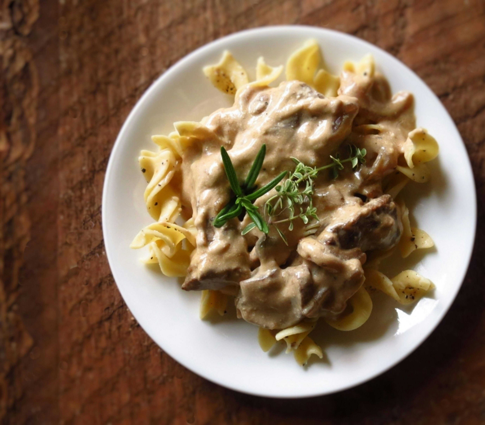

Home
Beef Stroganoff

Creamy and savory Beef Stroganoff your family will love
This delicious beef stroganoff recipe is easy to prep and make in an instapot or a dutch oven. The added touch of red wine to deglaze the pan will elevate this dish to new heights.
- Cubed stew meat (1lb)
- Mushrooms (0.5lb)
- Red cooking wine
- Beef bouillon
- One Onion
- One glove of Garlic finely chopped
- Sour Cream (to taste)
- Heavy Cream (1/2 cup)
- Green Onion (finely chopped)
- EVOO
- Salt
- Pepper
- Bring your dutch oven to a medium-high heat.
- While the dutch oven is coming up to temperature salt and pepper all the stew meat.
- Once the dutch oven is up to temperature add in the EVOO followed by the stew meat.
- Brown the stew meat on all sides and remove from the pan
- While the meat is browning chop one yellow or white onion
- Add in the chopped onion to the dutch oven and let sweat
- Add in the chopped mushrooms and saute for 3 min
- Add in the garlic once the onions become translucent and saute for 1 min
- Deglaze the pan with a splash of red cooking wine
- Add the browned stew meat, 1 can of beef broth, and 1 tbsp of beef bouillon and bring to a boil then reduce to simmer once boiling
- Cook until broth has reduced if not you can add a cornstartch slurry
- 10 min before serving have a pot of water boiling and add in the egg noodles
- Once ready to serve add the 1/2 cup of heavy cream
- Plate with the a dallop of sour cream and finely chopped green onions on top and serve